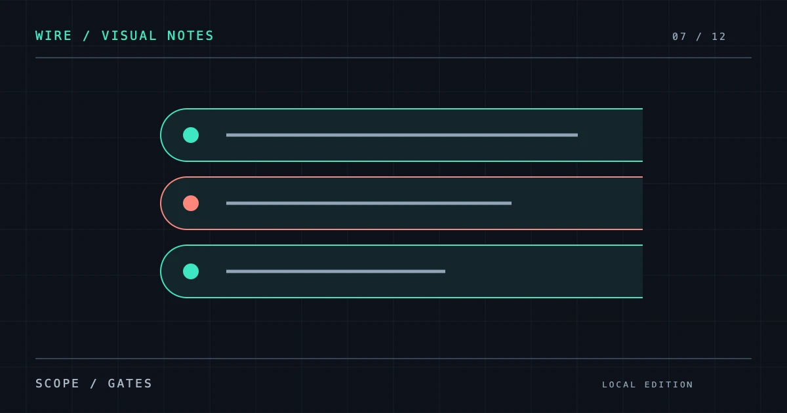

WIRE RECORD / 07
{D7_TITLE}
{D7_INTRO}

01 /{D7_H2_1}
{D7_TEXT_1}
01
{D7_M_LABEL_1}
{D7_M_TEXT_1}
02
{D7_M_LABEL_2}
{D7_M_TEXT_2}
03
{D7_M_LABEL_3}
{D7_M_TEXT_3}
02 /{D7_H2_2}
{D7_TEXT_2}
小屏可在表格内横向滚动。
| {D7_TABLE_COL_1} | {D7_TABLE_COL_2} | {D7_TABLE_COL_3} |
|---|---|---|
| {D7_TABLE_ROW_1} | {D7_TABLE_CELL_1_1} | {D7_TABLE_CELL_1_2} |
| {D7_TABLE_ROW_2} | {D7_TABLE_CELL_2_1} | {D7_TABLE_CELL_2_2} |
| {D7_TABLE_ROW_3} | {D7_TABLE_CELL_3_1} | {D7_TABLE_CELL_3_2} |
03 /{D7_H2_3}
{D7_TEXT_3}
{D7_QUOTE}
{D7_QUOTE_ATTRIBUTION}
常见问题
{D7_FAQ_Q1}
{D7_FAQ_A1}
{D7_FAQ_Q2}
{D7_FAQ_A2}
来源记录
- {D7_SOURCE_LABEL_1}
{D7_SOURCE_NOTE_1}
- {D7_SOURCE_LABEL_2}
{D7_SOURCE_NOTE_2}
核对日期：